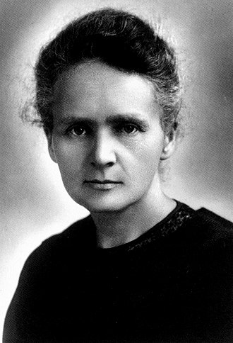
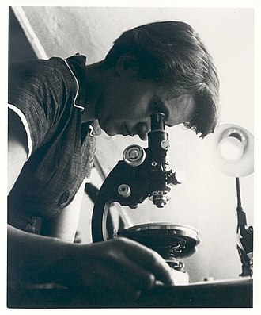

Maria Salomea Sklodowska-Curie, más conocida como Marie Curie fue una científica polaca nacionalizada francesa. Pionera en el campo de la radiactividad, fue la primera persona en recibir dos premios Nobel en distintas especialidades —Física y Química— y la primera mujer en ocupar el puesto de profesora en la Universidad de París. En 1995 fue sepultada con honores en el Panteón de París por méritos propios. Nació en Varsovia, en lo que entonces era el Zarato de Polonia (territorio administrado por el Imperio ruso). Estudió clandestinamente en la «universidad flotante» de Varsovia y comenzó su formación científica en dicha ciudad. En 1891, a los 24 años, siguió a su hermana mayor Bronislawa Dluska a París, donde culminó sus estudios y llevó a cabo sus trabajos científicos más sobresalientes. Compartió el premio Nobel de Física de 1903 con su marido Pierre Curie y el físico Henri Becquerel. Años después, ganó en solitario el premio Nobel de Química de 1911. Aunque recibió la ciudadanía francesa y apoyó a su nueva patria, nunca perdió su identidad polaca: enseñó a sus hijas su lengua materna y las llevaba a sus visitas a Polonia. Nombró el primer elemento químico que descubrió, el polonio, como su país de origen. Sus logros incluyen los primeros estudios sobre el fenómeno de la radiactividad (término que ella misma acuñó), técnicas para el aislamiento de isótopos radiactivos y el descubrimiento de dos elementos —el polonio y el radio—. Bajo su dirección, se llevaron a cabo los primeros estudios en el tratamiento de neoplasias con isótopos radiactivos. Fundó el Instituto Curie en París y en Varsovia, que se mantienen entre los principales centros de investigación médica en la actualidad. Durante la Primera Guerra Mundial creó los primeros centros radiológicos para uso militar. Murió en 1934 a los 66 años, en el sanatorio Sancellemoz en Passy, por una anemia aplásica causada por la exposición a la radiación de tubos de ensayo con radio que guardaba en los bolsillos en el trabajo y en la construcción de las unidades móviles de rayos X de la Primera Guerra Mundial.

Rosalind Elsie Franklin fue una química y cristalógrafa británica. Una de los cuatro investigadores descubridores de la estructura molecular del ADN en 1953. Fue responsable de contribuciones imprescindibles para la comprensión de la estructura del ADN (las imágenes por difracción de rayos X que revelaron la forma de doble hélice de esta molécula son de su autoría), del ARN, de los virus, del carbón y del grafito. Sus trabajos acerca del carbón y de los virus fueron apreciados en vida, mientras que su contribución personal a los estudios relacionados con el ADN, que tuvo un profundo impacto en los avances científicos de la genética, no se reconoció de la misma manera que los trabajos de James Dewey Watson, de Francis Crick y de Maurice Wilkins. Nacida en una prominente familia judía inglesa, Franklin fue educada en una escuela privada en Norland Place, en el oeste de Londres, en la Escuela Lindores para Señoritas en Sussex, y en la Escuela St Paul's para niñas, donde fue sobresaliente en todos los deportes y materias. Fue aceptada en la universidad a los 18 años, y ganó una beca de estudios de 30 libras al año por tres años. Su padre le pidió que donara el dinero a estudiantes refugiados de la segunda guerra mundial. Después estudió Ciencias Naturales en el Newnham College en Cambridge, donde se graduó en 1941. Ganó una beca universitaria en la Universidad de Cambridge, en el laboratorio de fisicoquímica, bajo la supervisión de Ronald George Wreyford Norrish, quien la decepcionó por su falta de entusiasmo. Afortunadamente, la Asociación Británica para la Investigación del Uso del Carbón (BCURA, por sus siglas en inglés) le ofreció una plaza de investigadora en 1942, y fue así como inició su trabajo sobre el carbón. Esto la ayudó a obtener su doctorado en 1945. Fue a París en 1947, como chercheuse (investigadora postdoctoral) bajo la supervisión de Jacques Mering en el Laboratorio Central de Servicios Químicos del Estado, donde se convirtió en una consumada cristalógrafa de rayos X. Se unió al King's College de Londres en 1951, pero se vio obligada a mudarse al Birkbeck College pasados únicamente dos años, debido a desacuerdos con su director John Randall y, más aun, con su colega Maurice Wilkins. En Birkbeck, J. D. Bernal, director del Departamento de Física, le ofreció un equipo de investigación por separado. Rosalind Franklin murió de cáncer de ovario a los 37 años de edad. Franklin tomó las imágenes de ADN por difracción de rayos X durante su estancia en el King's College, en Londres. Estas imágenes, que sugerían una estructura helicoidal y que permitieron generar inferencias sobre detalles claves acerca del ADN, fueron mostradas por Wilkins a Watson. Según Francis Crick, la investigación y datos obtenidos por ella fueron clave para la determinación del modelo de Watson y Crick de la doble hélice del ADN en 1953. Watson confirmó esta opinión a través de una afirmación propia en la inauguración del edificio Franklin-Wilkins en el 2000. Su trabajo fue el cuarto en publicarse en una serie de tres artículos sobre el ADN en la revista Nature, el primero de los cuales fue el de Watson y Crick. Watson, Crick y Wilkins compartieron el Premio Nobel de Fisiología y Medicina en 1962. Watson puntualizó que Franklin debió haber sido galardonada también con el Premio Nobel de Química, junto con Wilkins, lo cual era incompatible con las normas del prestigioso premio que no permite que se entregue premios a personas ya fallecidas. Una vez concluido su trabajo en el ADN, con su propio equipo en Birkbeck College, Franklin dirigió investigaciones acerca de las estructuras moleculares de los virus, que llevó a descubrimientos nunca antes vistos. Dentro de los virus que estudió se incluyen el virus de la polio y el virus del mosaico del tabaco. Continuando su investigación, su compañero de equipo y posteriormente beneficiario Aaron Klug ganó el Premio Nobel de Química en 1982.